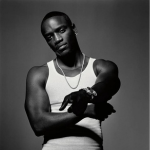
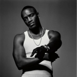

Populer Albums

.jpeg)


Discription
English songs, originating from diverse cultural backgrounds, represent a rich and varied musical tapestry that has profoundly influenced global music culture. Spanning numerous genres including pop, rock, hip-hop, R&B, and classical, English songs are characterized by their lyrical depth, melodic diversity, and broad emotional appeal. The evolution of English music has seen a seamless blending of traditional and contemporary elements, resulting in a dynamic and continually evolving soundscape. Pioneering artists like The Beatles, Michael Jackson, and Madonna have left an indelible mark on the music industry, setting trends and breaking boundaries. In recent decades, the rise of digital platforms has democratized music distribution, allowing a new wave of artists to emerge and innovate. English songs often reflect a wide range of themes, from love and heartbreak to social issues and personal empowerment, resonating with audiences worldwide. The universal appeal of English songs lies in their ability to transcend linguistic and cultural barriers, making them a staple in the global music scene. With influences ranging from classical European compositions to African-American blues and jazz, English music continues to evolve, integrating diverse sounds and stories into a unified yet multifaceted genre that captivates listeners around the world.
Some Artists


 
